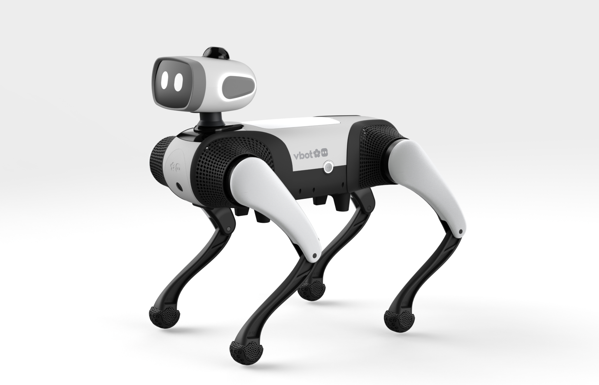
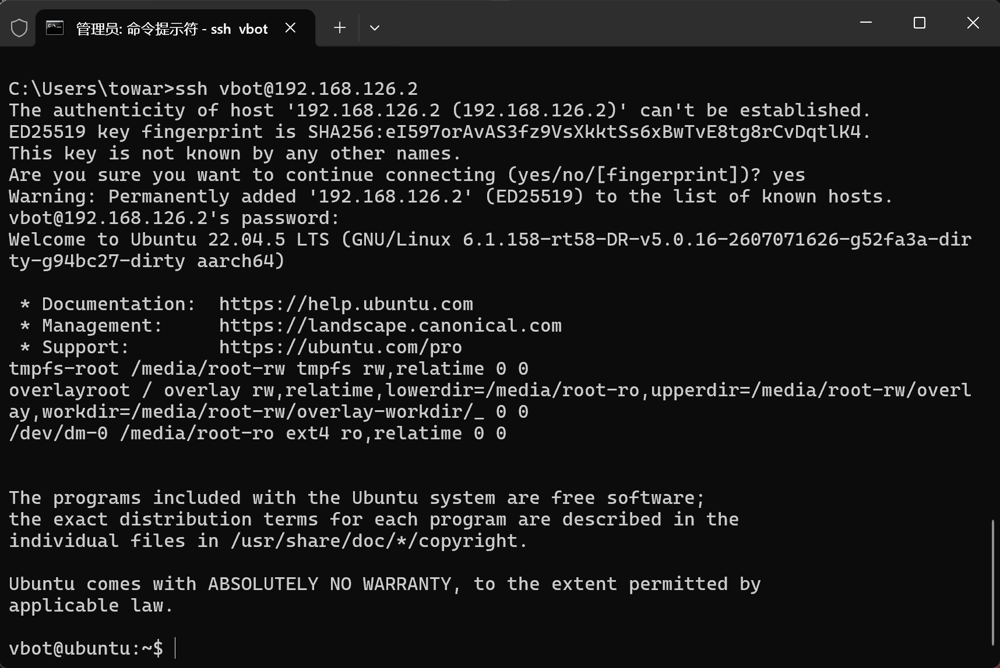
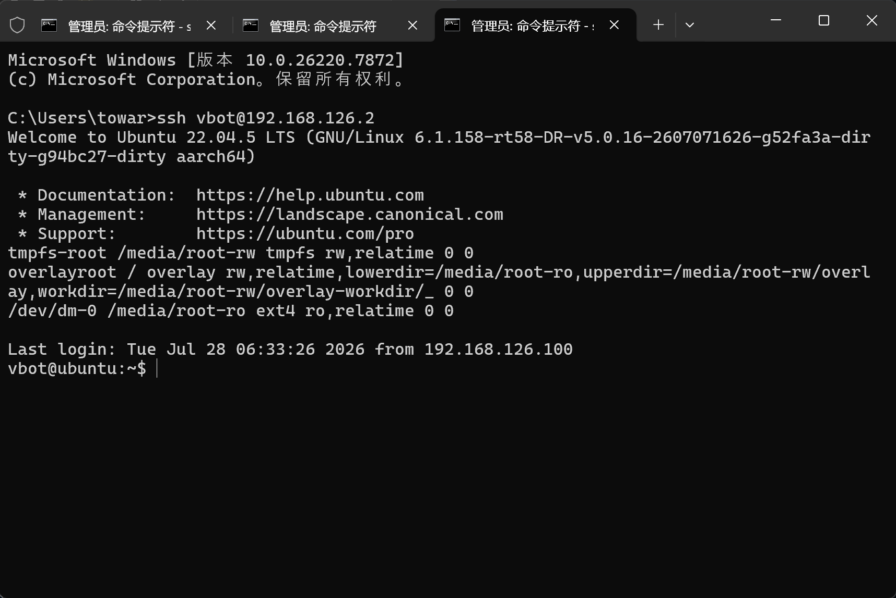

极速开箱与网络接入

🎙️ 展开直播口播导语（讲师版）
“各位极客开发者、直播间的朋友们，大家晚上好！欢迎来到 VBOT EDU 具身智能大师课！很多朋友刚把这只沉甸甸的四足机器狗从航空箱里抱出来，第一件事就是‘连接电脑’。这一步看似人畜无害，其实一线现场暗坑无数！有的同学手一抖把电脑 IP 配成了 .2，跟机器狗自己撞车撞得两头失联；有的同学换了一台测试机，被 SSH 的 Host Key 报错拒之门外……今天这节课，我们把‘有线千兆接入’与‘1.6 固件新增板载 Wi-Fi 直连’两套打法倾囊相授，手把手教你配置 ed25519 密钥，让你只要在键盘上敲下 ssh vbot 四个字符，就能实现 1 秒免密直达！”
本课学习目标
- 说清机器狗"双计算单元"的 IP 拓扑：计算主板
192.168.126.2与主控网关板192.168.127.10 - 用 Type-C 有线网口完成静态 IP 配置并 ping 通机器狗
- 用 V1.6.0 新增的板载 WiFi 直连模式免网线接入
- 配好 ed25519 免密与 SSH 别名，实现
ssh vbot一秒登录 - 独立排除 Host Key 变更冲突
接入全流程全景：15 分钟从开箱到 SSH 登录
先看整体节奏——首次接入的五个阶段与预计耗时（熟练后全程可压缩到 5 分钟以内）：
接入方式决策流程
两套接入打法怎么选？跟着下面的决策流走：
eth2 · 最低延迟、最强抗干扰
192.168.126.100/24，网关留空需固件 ≥ V1.6.0 · 免网线
VBOT-EDU-XXXX 热点DHCP 自动获取
192.168.127.xping 192.168.126.2（WiFi 模式为 192.168.127.2）ssh vbot一、硬件端口与连接拓扑
VBOT 狗身具备两个核心计算单元，接入前必须先分清你要连的是哪一块板：
- 计算主板（
192.168.126.2）搭载 128 TOPS 算力、Ubuntu 22.04 LTS 与 ROS 2 Humble，是开发者编写算法和运控代码的宿主机——日常开发连的就是它。 - 主控网关板（
192.168.127.10）运行实时系统（RTOS），掌管整机电源管理、低级外设、Wi-Fi 与蓝牙。
192.168.126.100静态 IP
Type-C 转接
192.168.126.2Ubuntu 22.04 · SSH/ROS 2
192.168.127.10WiFi / 蓝牙 / 电源

二、接入方案 A：Type-C 有线网口直连（最稳固）
有线连接具备最高优先级、最低延迟和最强抗干扰能力，是高频运动控制、大模型部署与黑客松现场调测的首选方式。
1. 物理连线
- 插入机器狗端使用配备的 Type-C 转千兆网口转接头，插入机器狗背部/腹部的扩展 Type-C 口（对应板载
eth2物理网卡）。 - 连接电脑端另一端用网线连接至你的电脑网口。
2. 本地电脑网卡静态 IP 配置（避坑关键！）
为避免 DHCP 自动分配失败，必须将电脑连接机器狗的网卡设置为静态（Static）IP：
| 参数项 | 推荐配置值 | 深度工程解析 |
|---|---|---|
| IP 地址 | 192.168.126.100 |
⚠️ 严禁配置为 192.168.126.2！配成 .2 会导致电脑与机器狗 IP 严重冲突，网络死锁！ |
| 子网掩码 | 255.255.255.0（/24） |
确保与 192.168.126.x 处于同一广播域 |
| 默认网关 | 留空（不填） | 留空可防止此网卡接管电脑外网访问路由，避免电脑无法上网查文档 |
| DNS | 留空（不填） | 局域网直连无需解析域名 |
# 将 "以太网" 替换为你实际的外接网卡名称
New-NetIPAddress -InterfaceAlias "以太网" -IPAddress 192.168.126.100 -PrefixLength 24sudo ifconfig en0 192.168.126.100 netmask 255.255.255.0 up3. 连通性测试
在终端中执行 Ping 命令：
ping 192.168.126.264 bytes from 192.168.126.2: icmp_seq=1 ttl=64 time=0.8 ms，说明物理链路与 IP 路由已完全畅通！🧪 小实验：静态 IP 冲突检测器
动手配置前，先把你打算填的 IP 输进来测一测——看看会不会撞上机器狗：
三、接入方案 B：1.6 固件板载 WiFi 直连（告别网线）
- 进入开发者 Wi-Fi 模式机器狗上电开机，等待状态指示灯进入待命呼吸状态；手机 APP 连接机器狗，在「系统设置」→「开发者选项」中开启「板载 WiFi 调试模式」，或通过长按背部调试按钮 3 秒触发。
- 连接 AP 热点电脑无线网卡搜索名为
VBOT-EDU-XXXX的 Wi-Fi 热点并连接（默认初始密码详见机身铭牌或官方出厂卡片）。 - 确认获取到的 IP连接成功后，电脑将自动通过 DHCP 获取
192.168.127.x网段 IP，计算板在此网段下的映射入口通常为192.168.127.2。

四、建立 SSH 免密秒连通道
vbot · 初始密码：vbot。首次登录后建议立即执行 passwd 修改密码。1. 生成并推送 ed25519 密钥对
在本地终端中生成高安全性密钥并复制到机器狗：
# 本地生成密钥（已有则跳过）
ssh-keygen -t ed25519 -C "vbot-developer"
# 将公钥推送至机器狗（需输入一次默认密码 vbot）
ssh-copy-id vbot@192.168.126.22. 配置 SSH 别名（~/.ssh/config）
在本地电脑的 ~/.ssh/config（Windows 位于 C:\Users\<你的用户名>\.ssh\config）追加以下配置：
Host vbot
HostName 192.168.126.2
User vbot
IdentityFile ~/.ssh/id_ed25519
ServerAliveInterval 30
ServerAliveCountMax 3🧪 小实验：SSH 别名配置生成器
按你的实际接入方式改一改参数，一键生成可直接粘贴进 ~/.ssh/config 的配置块：
192.168.127.2；两台狗都常用？生成两份配置、别名分别叫 vbot-a / vbot-b 即可。3. 一秒登录自检
现在，只需在任何终端中输入四个字符：
ssh vbot直接免密进入设备系统！执行自检命令验证硬件与系统版本：
uname -a
# Linux vbot 5.10.x-aarch64 #1 SMP Ubuntu 22.04 LTS
五、高频排错：清除 SSH Host Key 变更冲突
如果借用了另一台同 IP 的机器狗（黑客松现场尤其常见），可能会看到：
在本地电脑执行一行命令清除旧指纹：
ssh-keygen -R 192.168.126.2重新执行 ssh vbot 即可顺畅连接。
本课小结
| 接入方式 | 入口地址 | 适用场景 |
|---|---|---|
| Type-C 有线直连（方案 A） | 192.168.126.2 | 高频运控、大模型部署、现场调测首选 |
| 板载 WiFi 直连（方案 B，≥V1.6.0） | 192.168.127.2 | 免网线快速调试、移动演示 |
- 电脑静态 IP 用
192.168.126.100，严禁.2，网关/DNS 留空 ssh vbot四字符免密直达，密钥用 ed25519- 换狗报 Host Key 警告 →
ssh-keygen -R一行解决
/vel_cmd，手写一个带看门狗保护、带安全急停兜底的 20Hz 运控脚本：1.2 极速跑通 Hello World。